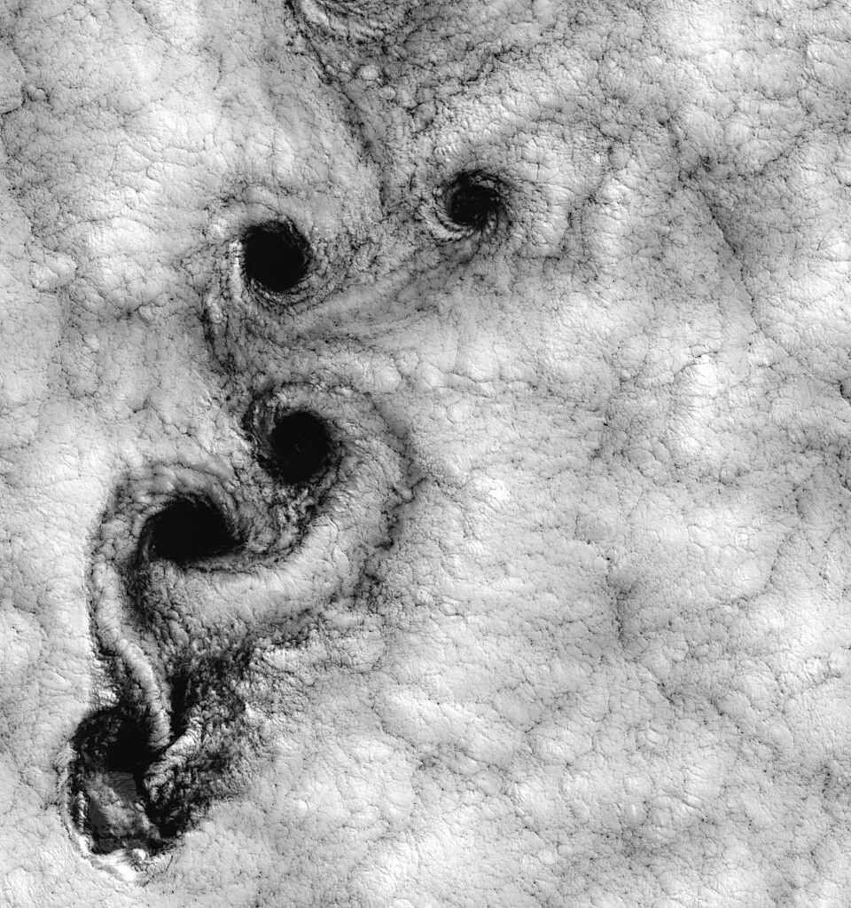
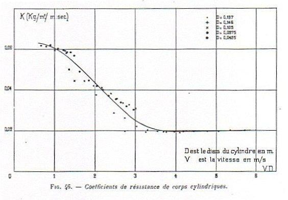

Un problema sencillo con todos los comportamientos: remolinos quietos, vórtices que se desprenden y turbulencia
Un cilindro en una corriente es uno de los problemas más simples de la mecánica de fluidos: un poste en un río, un cable en el viento, la chimenea de una fábrica. Y sin embargo, a medida que la corriente se hace más rápida, ese mismo cilindro muestra casi todos los comportamientos que puede tener un fluido: un flujo ideal y simétrico, remolinos quietos, vórtices que se desprenden de a uno y turbulencia. El que manda es el número de Reynolds.
En un fluido ideal, el flujo alrededor de un cilindro se arma sumando una corriente uniforme y un dipolo, como muestra David Tong, de la Universidad de Cambridge [1]. Las líneas de corriente se abren adelante y se cierran atrás de manera simétrica, con dos puntos de estancamiento, uno adelante y otro atrás, donde la velocidad se anula [1]. Como la presión también es simétrica, el cilindro no siente arrastre: es la paradoja de d'Alembert [1].
Tong recorre lo que muestran las fotos del Album of Fluid Motion de Milton Van Dyke a medida que crece el número de Reynolds [1]:
Los remos que se turnan: imaginá dos remeros, uno a cada lado de un bote, que reman por turnos: primero uno, después el otro. El bote avanza zigzagueando un poco. Los remolinos que se desprenden de un cilindro hacen algo parecido: primero de un lado, después del otro, y el cilindro siente un empujón lateral que cambia de sentido con cada remolino.
Tong explica la separación con la presión. Adelante del cilindro, la presión baja a medida que el flujo rodea el cuerpo, y eso lo acelera. Atrás, la presión vuelve a subir, y eso lo frena. En la capa límite, pegada a la pared, el fluido ya iba lento por la viscosidad; con la presión en contra, en algún punto se frena del todo y empieza a ir para atrás: ahí la capa límite se despega del cilindro [1]. La capa que se despega lleva vorticidad, generada por la condición de que el fluido no resbale sobre la pared, y esa vorticidad forma la estela [1]. El fenómeno se cuenta en detalle en la separación de la capa límite.

Con Re alrededor de 104, la estela es turbulenta, la presión detrás del cilindro queda muy baja y el arrastre es grande [1]. Y cerca de Re ≈ 105 pasa algo sorprendente: la propia capa límite se vuelve turbulenta [1]. Eso tiene dos efectos opuestos: la fricción de la capa turbulenta aumenta, pero la capa se despega más atrás, la estela se angosta y el arrastre por presión baja mucho [1]. El segundo efecto gana, y el arrastre cae de golpe. Tong lo llama crisis del arrastre [1].

Medir el ritmo de los vórtices: cuando un flujo tiene un tiempo característico T, como el período con que se desprenden los vórtices, Tong define el número de Strouhal, Sr = L/(UT), que compara ese ritmo con el tiempo que tarda el fluido en recorrer la longitud L del cuerpo [1]. Si se le agrega circulación al cilindro, aparece además una fuerza de sustentación: es el efecto Magnus [1].
El flujo alrededor de un cilindro es un resumen de la mecánica de fluidos. A Reynolds bajo el modelo ideal ya falla, porque el flujo se separa; a Reynolds intermedio aparecen remolinos quietos y después la calle de vórtices de von Kármán; a Reynolds alto, la estela se vuelve turbulenta, y todavía más arriba la capa límite turbulenta reduce de golpe el arrastre. Un poste en un río puede contar toda esa historia.
Pregunta para la comunidad: Los cables de los tendidos eléctricos a veces «cantan» con el viento. ¿Qué tendrá que ver la calle de vórtices de von Kármán con ese sonido? ¿Qué esperás que pase con la nota si el viento sopla más fuerte?